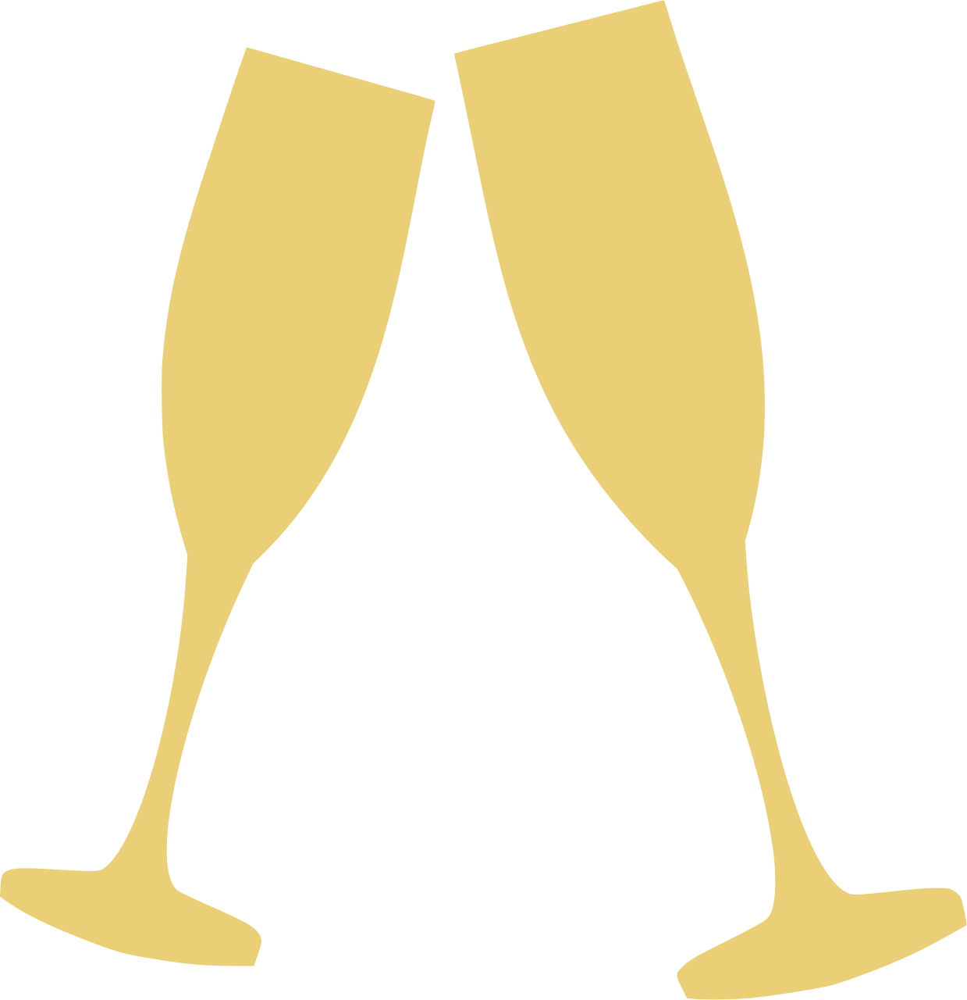

Promoción 2004
FE Y ALEGRIA N°43
La esperanza de triunfar siempre estará viva
Reencuentro
20 años

 La Capullana
La CapullanaFalta
Promoción 2004
FE Y ALEGRIA N°43
La esperanza de triunfar siempre estará viva
Reencuentro
20 años